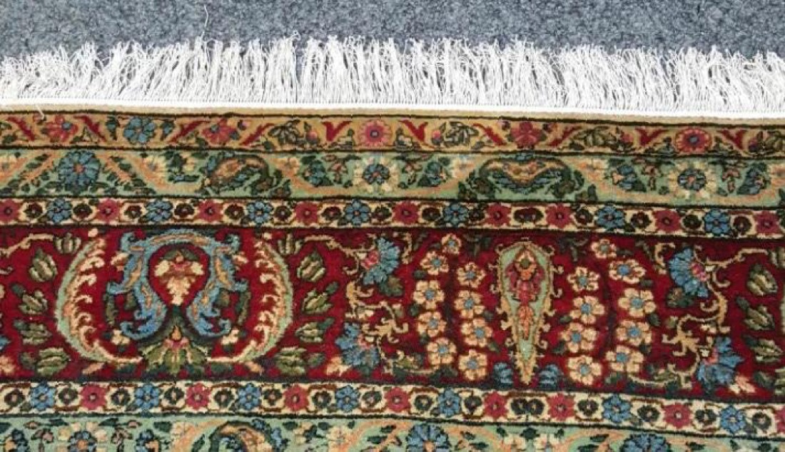
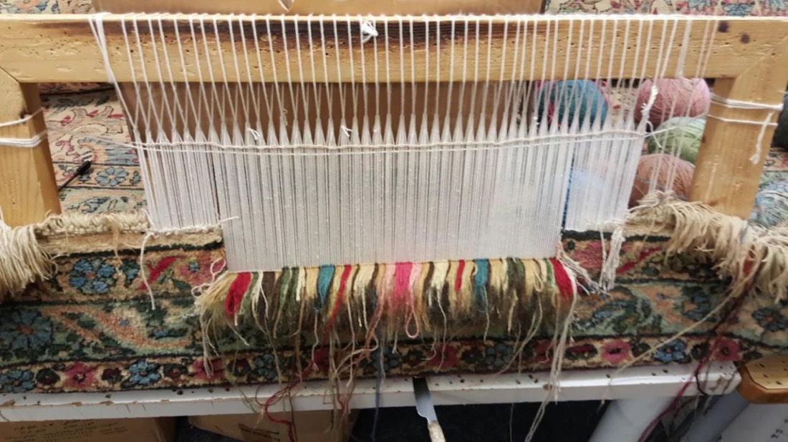
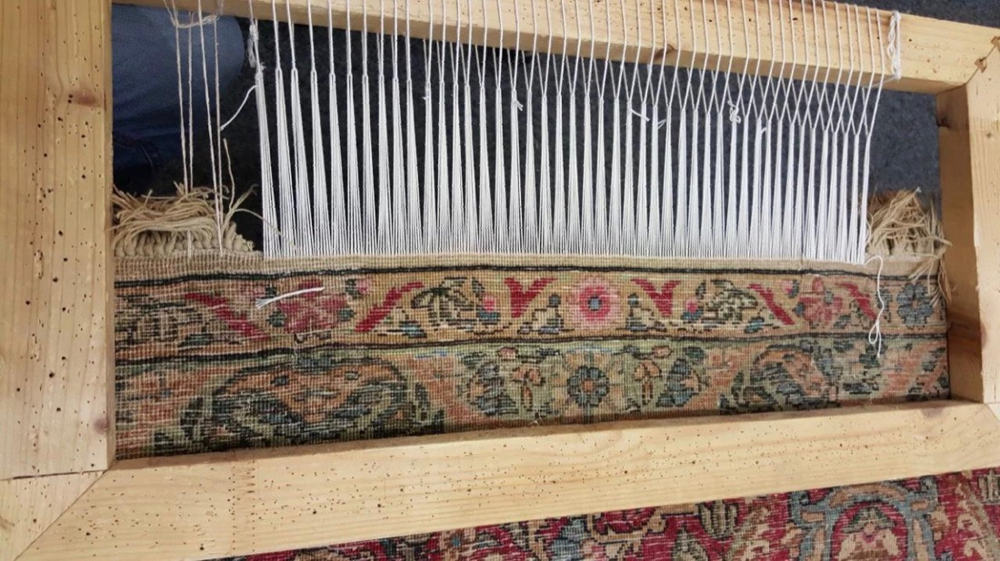
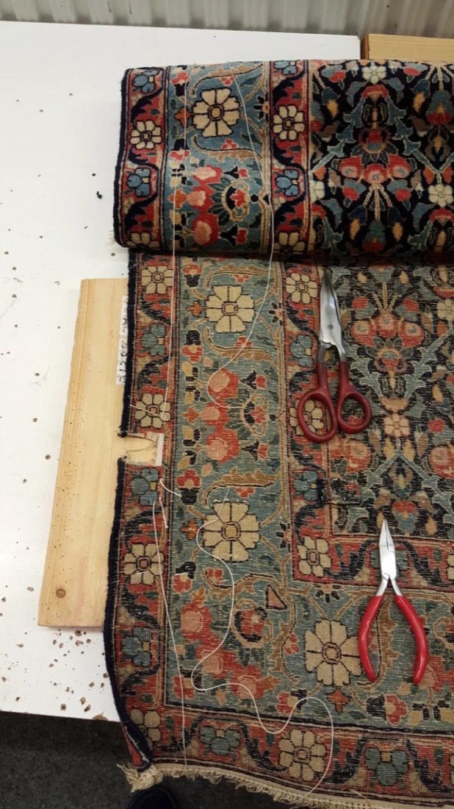
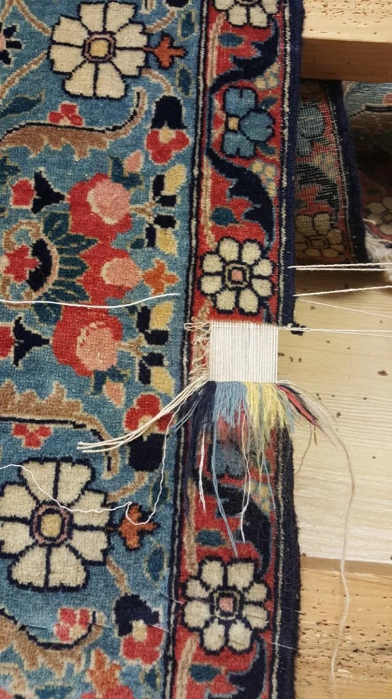
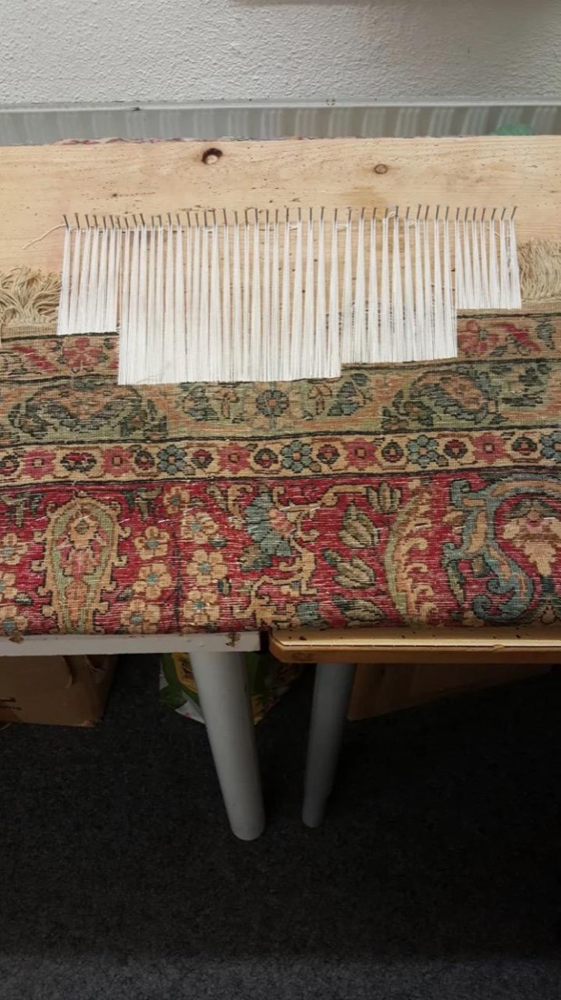

Teppichreinigung
Tiefenrein und schonend von Hand gewaschen. Gegen Staub, Flecken und Gerüche.
Teppichreinigung & -reparatur
Schonende Reinigung und fachgerechte Reparatur für Orient-, Seiden- und Designerteppiche. Wir holen ab, pflegen von Hand und bringen Ihr Stück strahlend zurück.
Vertraut von über 500
Warum Fabio Soltani
Material- und farbschonend gereinigt, so wie es echter Teppich verdient.
Fransen, Kanten, Löcher und Risse werden fachmännisch instand gesetzt.
Wir holen Ihren Teppich ab und bringen ihn fertig zurück.
Orient, Seide, Nomade oder Designerstück. Wir kennen das Handwerk.
Unser Handwerk
Tiefenrein und schonend von Hand gewaschen. Gegen Staub, Flecken und Gerüche.
Beschädigte Stellen, Löcher und Risse werden sorgfältig und unauffällig instand gesetzt.
Ausgefranste Kanten und beschädigte Fransen fachgerecht erneuert.
Behandlung gegen Mottenschäden und hartnäckige Flecken, mit Fingerspitzengefühl.
In vier Schritten zum sauberen Teppich
Kostenlos, telefonisch oder im Atelier. Wir schätzen Aufwand und Kosten ein.
Wir holen Ihren Teppich bei Ihnen ab. Abholung und Lieferung sind inklusive.
Reinigung und Reparatur in sorgfältiger Handarbeit.
Ihr Teppich kommt frisch gepflegt und fixfertig zurück.
Reinigung
Schonend, materialgerecht und in sorgfältiger Handarbeit. Bewegen Sie die Maus über ein Video oder tippen Sie es an, um den Schritt zu sehen.
Reparatur
Fransen, Kanten, Löcher und abgenutzte Stellen: Wir setzen Ihren Teppich Knoten für Knoten wieder instand, so wie es echtes Handwerk verdient.






Jetzt starten
Kostenlose, unverbindliche Beratung mit transparenter Kostenschätzung, auf Wunsch auch bei Ihnen vor Ort, unverbindlich und gratis. Wir melden uns innerhalb von 24 Stunden.
Häufige Fragen
Je nach Zustand und Grösse meist ein bis drei Wochen. Den genauen Termin nennen wir Ihnen mit der Offerte.
Das hängt von Grösse, Material und Aufwand ab. Sie erhalten vorab ein transparentes Angebot, ohne versteckte Kosten.
Ja. Abholung und Lieferung sind inklusive. Sie müssen sich um nichts kümmern.
Orient-, Seiden-, Nomaden- und Designerteppiche. Bei empfindlichen Stücken arbeiten wir besonders behutsam.